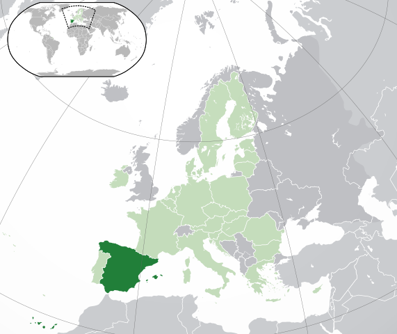

Obecné informace
Politické zřízení
Nejvyššími státními orgány jsou král, parlament a vláda. Král je hlavou státu, reprezentuje stát navenek, svolává a rozpouští parlament. Má pravomoc schvalovat a vyhlašovat zákony. Je hlavou státu na základě systému primogenitury. Parlament je dvoukomorový, skládá se z Kongresu poslanců a Senátu. Kongres poslanců je volen na 4 roky na základě poměrného zastoupení, volebním obvodem je provincie. Senát je volen na 4 roky. Výkonná a nařizovací moc je svěřena vládě. Jejím poradním orgánem je Státní rada. Předseda vlády může být zastoupen králem nebo parlamentem.
Španělsko žádá o navrácení Gibraltaru , malé britské državy na jižním pobřeží. Byl obsazen během války o španělské dědictví V v roce 1704 a byl přiznán Británii roku 1713 Utrechtskou smlouvou.
Ekonomika
Hlavní model španělského ekonomického růstu (založený hlavně na masové turistice, neustálé výstavbě a dělnických profesích) je kolísavý a nemusí být dlouhodobě udržitelný. První zpráva Observatoře Udržitelnosti (španělsky Observatorio de Sostenibilidad), která byla publikována a financována španělským Ministerstvem životního prostředí a univerzitou v Alcalá, odhaluje, že růst HDP je přes 25 % za posledních deset let, zatímco skleníkové plyny rostou od roku 1990 o 45 %. Ačkoliv populace ve Španělsku roste jen o něco málo přes 5 % mezi roky 1990 a 2000 , plocha měst se zvětšila o více než 25 % za stejnou dobu.
V důsledku ekonomické krize stoupla nezaměstnanost ve Španělsku na 27,2 % v roce 2013.[12] Španělsko se dlouhodobě potýká s vysokým zadlužením, které v roce 2017 činilo 98,3 % HDP.
Státní symboly
Vlajka
Španělské vlajce dominují dvě barvy, červená a žlutá. Barvy pocházejí z býčí arény. Červené vodorovné pruhy představují krev a žlutý středový pruh znázorňuje písek v aréně. Vlajka byla vytvořena roku 1785 pro válečné loďstvo a o sedm let později se stala státní španělskou vlajkou.
Španělská vlajka
základní údaje
https://commons.wikimedia.org/w/index.php?curid=8097690
| Hlavní město | Madrid |
|---|---|
| Rozloha | 504 782 km²(51. na světě), z toho 1,04 % vodní plochy |
| Nejvyšší bod | Pico de Teide (3718 m n. m.) |
| Časové pásmo | +1 |
| Počet obyvatel | 48 958 159 | ||
|---|---|---|---|
| Hustota zalidnění | 87,8 ob. / km² | ||
| Národnostní | 87,8 ob. / km² | ||
| Jazyk | španělština, regionálně katalánština, baskičtina, galicijština | ||
| Náboženství | Katolické |
| Španělé | Katalánci | Galicijci | Baskové |
|---|---|---|---|
| 73% |
16% |
6% |
5% |